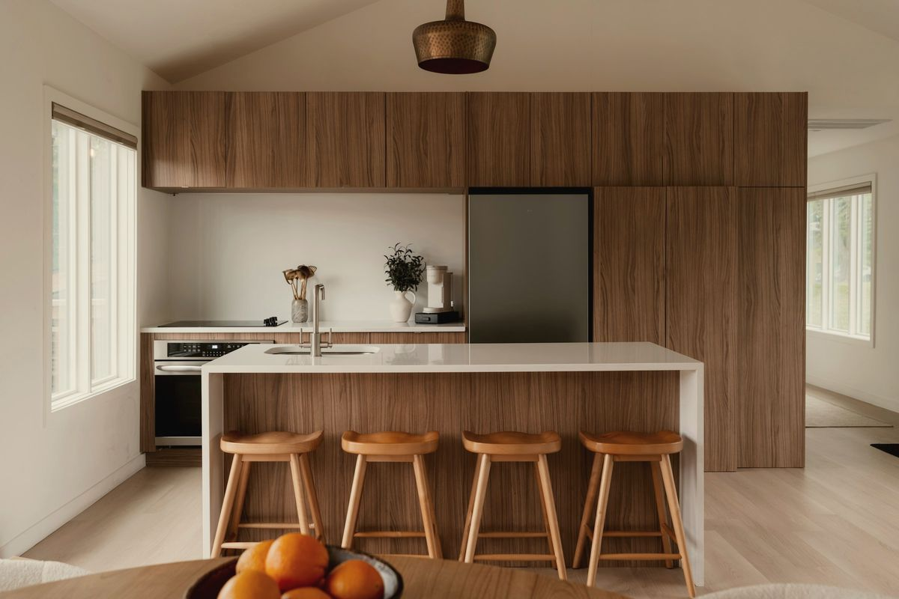
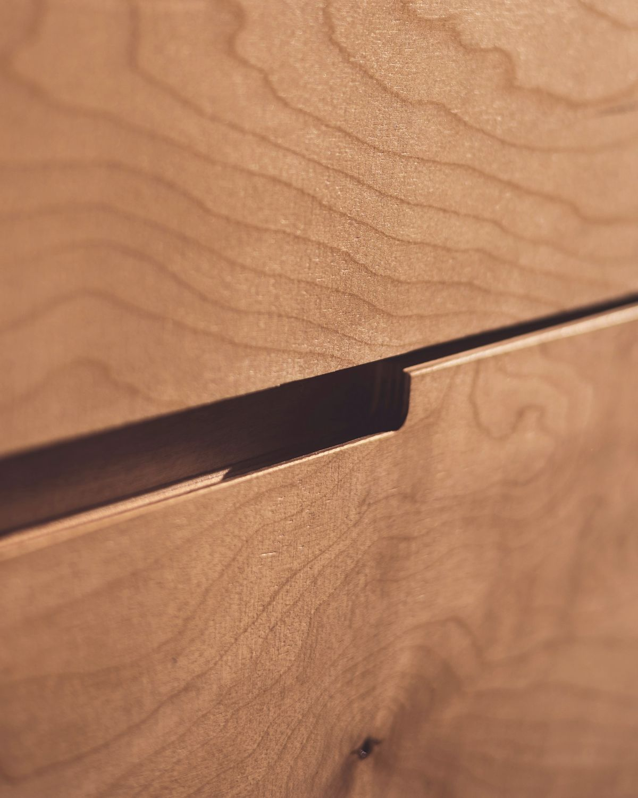
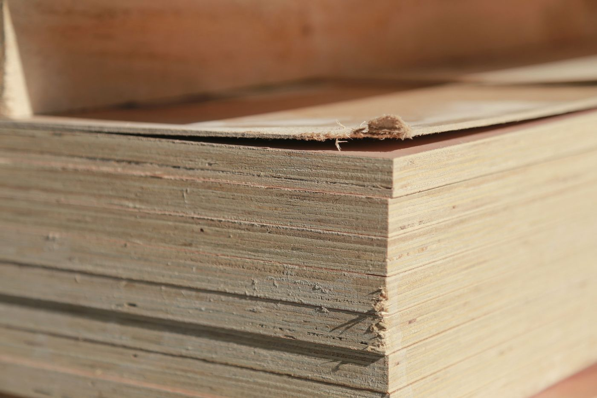
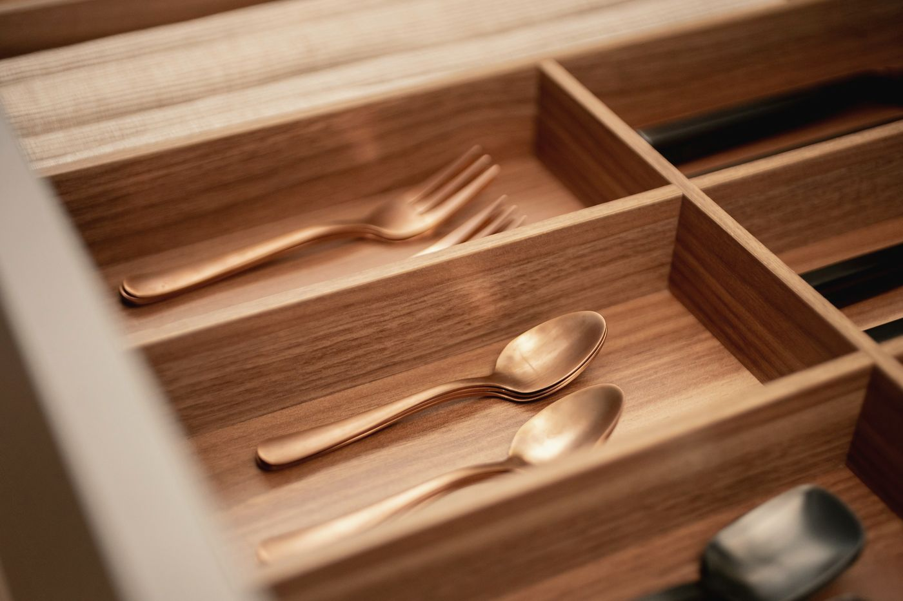
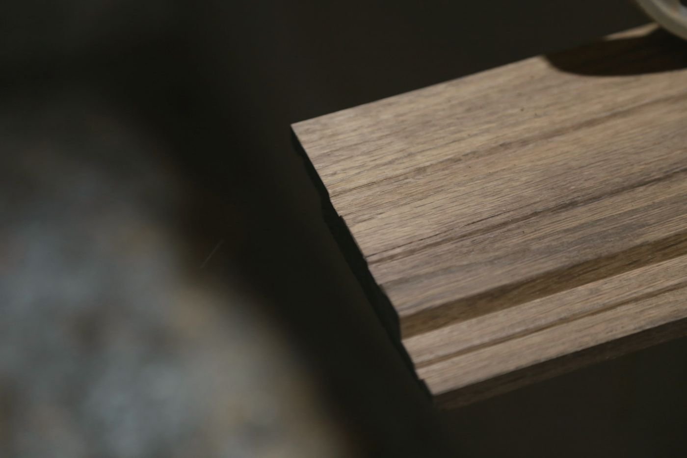
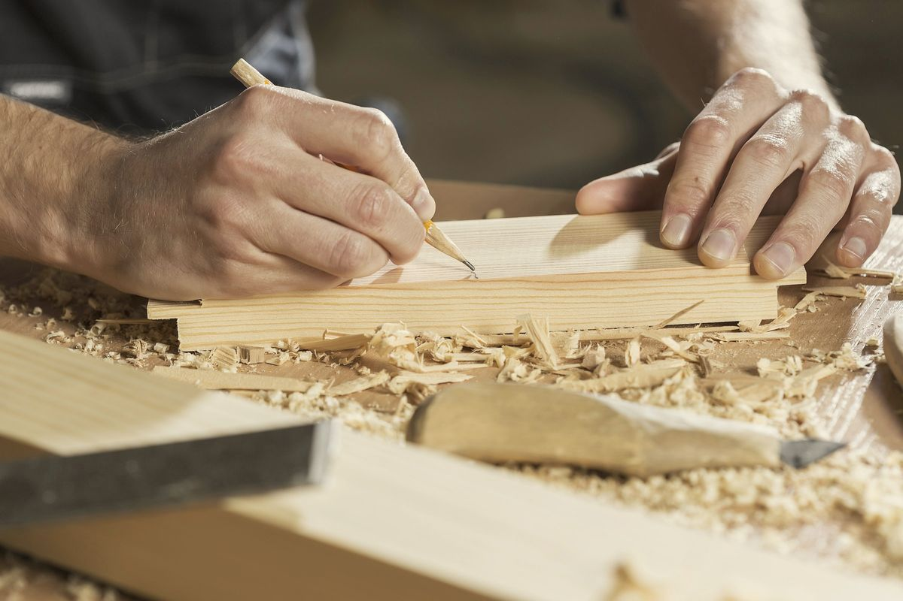

Teemme mittatilauskeittiöt koivuvanerista ja massiivipuusta omalla verstaallamme Jyväskylän Keljossa.
Pihkan perustivat puusepät Aaro Lehtinen ja Veera Hakala vuonna 2016. Nyt meitä on viisi, ja teemme vuodessa noin 30 keittiötä.
Verstas ja ihmiset
Rungot ovat 18 mm koivuvaneria, ja laatikot kootaan sormiliitoksin.
Vaneri pitää ruuvin paremmin kuin lastulevy, joten saranat pysyvät paikallaan vielä vuosien päästä. Laatikon pohja on 12 mm vaneria, eikä se notkahda valurautapannun alla.
Ovet teemme koivusta tai tammesta, joskus saarnesta. Näytepalan saat aina ennen tilausta.




Vanha konehalli Keljossa, 420 m².
Hallissa korjattiin ennen maansiirtokoneita. Lattiassa on yhä huoltokuoppa, jonka päälle on pultattu teräslevy, ja siinä seisoo nyt liimapuristin.
Ovinäytteitä voi tulla katsomaan verstaalle, kun sovit ajan etukäteen.
Lähetä pohjapiirros, niin kerromme hinta-arvion viikon sisällä.
Alkuun riittää valokuva vanhasta keittiöstä ja pari mittaa. Vastaamme kahden arkipäivän kuluessa.
048 562 1913, arkisin 8–16
hei@pihka-keittiot.example